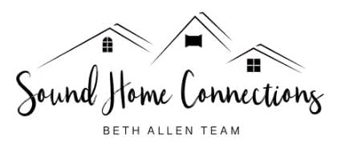

Gig Harbor
Kimball
Coffeehouse
6659 Kimball Drive
Gig Harbor
Your donation supports
Harbor Hope Center
Warm coats, jackets, sweaters, hoodies and other cold-weather essentials for young adults.
A community coat drive
A little warmth goes a long way.
A coat you give. A cup we share.
A warmer winter for a neighbor.
A small act of kindness
Choose clean, new or gently used donations. See what each community needs below.
Drop off your donation at a participating coffee shop, November 7, between 10 AM and noon.
Enjoy a coffee on us, and a moment of connection with the community you’re helping.
Find your neighborhood
Each shop is collecting for a local community partner. Pick a stop, check the needs, and bring a little warmth.
Gig Harbor
6659 Kimball Drive
Gig Harbor
Your donation supports
Warm coats, jackets, sweaters, hoodies and other cold-weather essentials for young adults.
Port Orchard
701 Bay St
Port Orchard
Your donation supports
Kids’ jackets, toddler through youth sizes (14 months to size 10, plus S to 2XL).
Tacoma
2209 N Pearl St #104
Tacoma
Your donation supports
Coats in all sizes for men and women, plus socks and gloves.
A little care makes a difference. Please bring clean items, new or gently used.
Rooted in community
Thank you for helping our neighbors feel a little more cared for.
Proudly sponsored by
Joining the Port Orchard event
